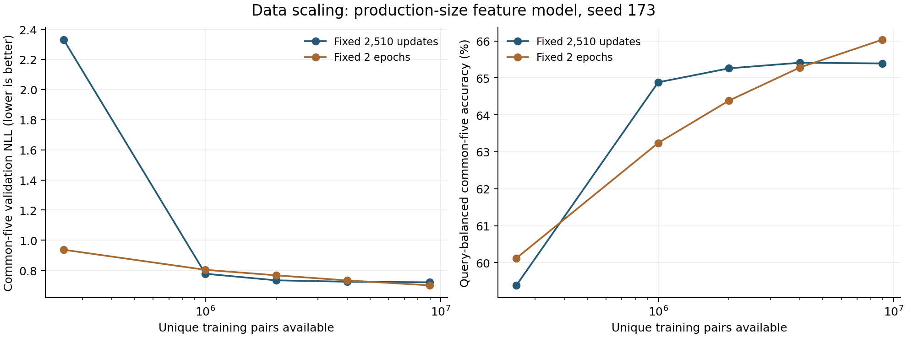
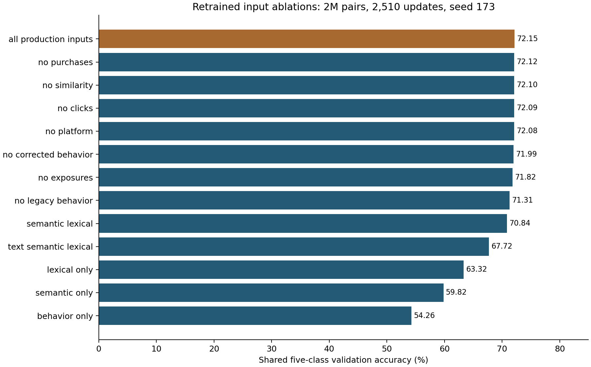
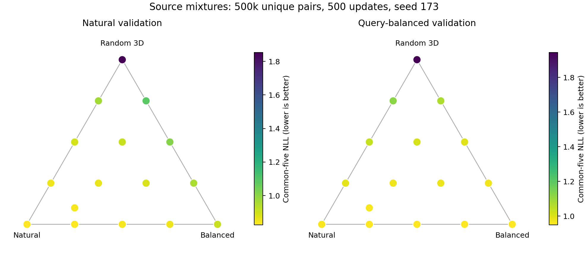

What Makes a Relevance Model Generalize?
A controlled study of data composition, model capacity, supervision, and serving cost
Simon Dong · Research protocol v1.1 · 16 September 2026
Status: production replay and main data audit complete; scratch and full-parameter LM pilots passed; controlled training is running. Measured single-seed validation results are reported separately; final-test and deployment conclusions remain pending.
Download protocol · Run registry · Aggregate audit
Explore feasible data mixtures
This is a sampling calculator, not a predicted accuracy curve. It checks unique-pair capacity without replacement.
Capacities from the finalized training snapshot joined to its source sidecar.
Experiment status
| Work | State |
|---|---|
| Access and production identification | Completed; deployed model version 67, checkpoint digest verified |
| Full data integrity audit | Completed; see the aggregate audit file |
| Production validation replay | Completed; 496,477 pairs, 64.38% exact total accuracy |
| GPU infrastructure pilot | Completed on an allocated B200; full optimizer updates verified |
| Controlled training experiments | 58 completed; size, label, and small-LM head stages running |
| Confirmed model improvements | No results yet |
Measured training results
58 controlled quality runs complete, plus systems checks. Results below are exploratory validation measurements from seed 173. They are not deployment recommendations or final-test results. Each row evaluates all 496,477 validation pairs unless identified as a pilot. Native five-class and native ten-class accuracies are not compared; the main table uses the registered common five-bin target.
| Reference comparison | Unique training pairs | Common-five accuracy | Common-five NLL ↓ |
|---|---|---|---|
| Qwen3-0.6B, classification head | 250,000 | 79.48% | 0.5503 |
| Qwen3-0.6B, restricted token logits | 250,000 | 79.42% | 0.5512 |
| Qwen3-0.6B, full-vocabulary token | 250,000 | 79.41% | 0.5509 |
| Feature DCN, full data, two epochs | 8,953,912 | 73.21% | 0.7007 |
These reference rows are best-observed recipe comparisons with different input representations, training data counts, parameter counts, and compute. They do not isolate a single cause. The head-to-head LM comparison does freeze the backbone, examples, input serialization, batch order, and optimization recipe.
Complete experiment table
| Run | Unique pairs | Parameters | Updates | Common-five accuracy | Common-five NLL ↓ | Original MAE ↓ | Train / total seconds |
|---|---|---|---|---|---|---|---|
| architecture-2m-cross4-ce10-2510u-s173 | 2,000,000 | 9,744,882 | 2,510 | 72.36% | 0.7295 | 0.7080 | 14.3 / 44.5 |
| architecture-2m-large-ce10-2510u-s173 | 2,000,000 | 56,620,878 | 2,510 | 72.42% | 0.7856 | 0.6741 | 22.2 / 59.4 |
| architecture-2m-mlp-ce10-2510u-s173 | 2,000,000 | 2,875,242 | 2,510 | 70.52% | 0.7730 | 0.7692 | 12.2 / 41.9 |
| architecture-2m-small-ce10-2510u-s173 | 2,000,000 | 1,250,062 | 2,510 | 70.96% | 0.7592 | 0.7628 | 12.7 / 41.7 |
| architecture-2m-wide-ce10-2510u-s173 | 2,000,000 | 17,763,726 | 2,510 | 72.58% | 0.7295 | 0.6933 | 13.7 / 46.0 |
| feature-2m-behavior_only-ce10-2510u-s173 | 2,000,000 | 6,310,062 | 2,510 | 54.26% | 1.0944 | 1.1479 | 13.0 / 43.5 |
| feature-2m-lexical_only-ce10-2510u-s173 | 2,000,000 | 6,310,062 | 2,510 | 63.32% | 0.9847 | 1.1053 | 13.7 / 43.0 |
| feature-2m-no_clicks-ce10-2510u-s173 | 2,000,000 | 6,310,062 | 2,510 | 72.09% | 0.7352 | 0.7177 | 12.9 / 43.5 |
| feature-2m-no_corrected_behavior-ce10-2510u-s173 | 2,000,000 | 6,310,062 | 2,510 | 71.99% | 0.7368 | 0.7218 | 12.4 / 42.9 |
| feature-2m-no_exposures-ce10-2510u-s173 | 2,000,000 | 6,310,062 | 2,510 | 71.82% | 0.7415 | 0.7256 | 13.2 / 44.4 |
| feature-2m-no_legacy_behavior-ce10-2510u-s173 | 2,000,000 | 6,310,062 | 2,510 | 71.31% | 0.7584 | 0.7500 | 13.4 / 44.2 |
| feature-2m-no_platform-ce10-2510u-s173 | 2,000,000 | 6,310,062 | 2,510 | 72.08% | 0.7346 | 0.7174 | 13.0 / 43.9 |
| feature-2m-no_purchases-ce10-2510u-s173 | 2,000,000 | 6,310,062 | 2,510 | 72.12% | 0.7339 | 0.7165 | 12.6 / 43.3 |
| feature-2m-no_similarity-ce10-2510u-s173 | 2,000,000 | 6,310,062 | 2,510 | 72.10% | 0.7339 | 0.7177 | 13.7 / 43.5 |
| feature-2m-semantic_lexical-ce10-2510u-s173 | 2,000,000 | 6,310,062 | 2,510 | 70.84% | 0.7695 | 0.7659 | 13.4 / 43.5 |
| feature-2m-semantic_only-ce10-2510u-s173 | 2,000,000 | 6,310,062 | 2,510 | 59.82% | 0.9955 | 1.0234 | 13.8 / 43.2 |
| feature-2m-text_semantic_lexical-ce10-2510u-s173 | 2,000,000 | 6,310,062 | 2,510 | 67.72% | 0.8470 | 0.8862 | 13.9 / 44.7 |
| label-1m-ce5-2510u-s173-r2 | 1,000,000 | 6,309,897 | 2,510 | 71.04% | 0.7995 | 0.7340 | 13.7 / 40.8 |
| label-1m-ce7-2510u-s173 | 1,000,000 | 6,309,963 | 2,510 | 71.27% | 0.7795 | 0.7221 | 13.7 / 39.7 |
| label-1m-components-2510u-s173 | 1,000,000 | 6,309,996 | 2,510 | 67.51% | 0.9357 | 0.7196 | 14.2 / 40.7 |
| label-1m-joint16-2510u-s173 | 1,000,000 | 6,310,260 | 2,510 | 71.36% | 0.7713 | 0.7178 | 12.9 / 40.3 |
| llm-qwen3-06b-classifier-250k-1ep-s173 | 250,000 | 596,057,095 | 1,954 | 79.48% | 0.5503 | 0.5361 | 353.6 / 599.4 |
| llm-qwen3-06b-restricted-250k-1ep-s173 | 250,000 | 596,049,920 | 1,954 | 79.42% | 0.5512 | 0.5416 | 353.0 / 597.7 |
| llm-qwen3-06b-token-250k-1ep-s173 | 250,000 | 596,049,920 | 1,954 | 79.41% | 0.5509 | 0.5414 | 354.0 / 601.4 |
| mix-500k-0-0-100-ce10-500u-s173 | 500,000 | 6,310,062 | 500 | 54.40% | 1.7012 | 1.1723 | 2.8 / 24.9 |
| mix-500k-0-100-0-ce10-500u-s173 | 500,000 | 6,310,062 | 500 | 65.63% | 0.8896 | 0.9339 | 3.0 / 25.2 |
| mix-500k-0-25-75-ce10-500u-s173 | 500,000 | 6,310,062 | 500 | 64.06% | 0.9928 | 0.9469 | 3.0 / 24.6 |
| mix-500k-0-50-50-ce10-500u-s173 | 500,000 | 6,310,062 | 500 | 65.41% | 0.9313 | 0.9165 | 3.0 / 25.4 |
| mix-500k-0-75-25-ce10-500u-s173 | 500,000 | 6,310,062 | 500 | 66.70% | 0.8848 | 0.8722 | 3.0 / 24.1 |
| mix-500k-100-0-0-ce10-500u-s173 | 500,000 | 6,310,062 | 500 | 68.83% | 0.8174 | 0.8344 | 3.1 / 25.4 |
| mix-500k-25-0-75-ce10-500u-s173 | 500,000 | 6,310,062 | 500 | 66.70% | 0.9181 | 0.8546 | 3.0 / 24.5 |
| mix-500k-25-25-50-ce10-500u-s173 | 500,000 | 6,310,062 | 500 | 67.72% | 0.8593 | 0.8241 | 2.8 / 24.7 |
| mix-500k-25-50-25-ce10-500u-s173 | 500,000 | 6,310,062 | 500 | 68.40% | 0.8343 | 0.8122 | 2.8 / 24.7 |
| mix-500k-25-75-0-ce10-500u-s173 | 500,000 | 6,310,062 | 500 | 67.94% | 0.8356 | 0.8517 | 2.8 / 24.6 |
| mix-500k-50-0-50-ce10-500u-s173 | 500,000 | 6,310,062 | 500 | 68.28% | 0.8500 | 0.8172 | 2.9 / 24.6 |
| mix-500k-50-25-25-ce10-500u-s173 | 500,000 | 6,310,062 | 500 | 68.96% | 0.8170 | 0.8079 | 3.0 / 24.6 |
| mix-500k-50-50-0-ce10-500u-s173 | 500,000 | 6,310,062 | 500 | 68.36% | 0.8261 | 0.8487 | 3.0 / 24.6 |
| mix-500k-70-20-10-ce10-500u-s173 | 500,000 | 6,310,062 | 500 | 69.37% | 0.8051 | 0.8055 | 3.0 / 24.6 |
| mix-500k-75-0-25-ce10-500u-s173 | 500,000 | 6,310,062 | 500 | 69.08% | 0.8160 | 0.8032 | 2.8 / 24.5 |
| mix-500k-75-25-0-ce10-500u-s173 | 500,000 | 6,310,062 | 500 | 68.73% | 0.8202 | 0.8380 | 2.9 / 24.9 |
| optimization-2m-adamw-noamsgrad-2510u-s173 | 2,000,000 | 6,310,062 | 2,510 | 72.17% | 0.7324 | 0.7170 | 12.5 / 43.1 |
| optimization-2m-dropout0-2510u-s173 | 2,000,000 | 6,310,062 | 2,510 | 72.11% | 0.7318 | 0.7216 | 12.9 / 43.5 |
| optimization-2m-dropout03-2510u-s173 | 2,000,000 | 6,310,062 | 2,510 | 71.84% | 0.7422 | 0.7217 | 12.6 / 43.6 |
| optimization-2m-logweight-2510u-s173 | 2,000,000 | 6,310,062 | 2,510 | 71.54% | 0.7510 | 0.7440 | 13.6 / 44.3 |
| optimization-2m-lr1e-3-2510u-s173 | 2,000,000 | 6,310,062 | 2,510 | 72.41% | 0.7424 | 0.6955 | 13.5 / 45.8 |
| optimization-2m-lr1e-4-2510u-s173 | 2,000,000 | 6,310,062 | 2,510 | 70.45% | 0.7754 | 0.7703 | 13.3 / 44.2 |
| optimization-2m-wd0-2510u-s173 | 2,000,000 | 6,310,062 | 2,510 | 72.13% | 0.7332 | 0.7163 | 12.9 / 44.1 |
| optimization-2m-wd01-2510u-s173 | 2,000,000 | 6,310,062 | 2,510 | 72.15% | 0.7321 | 0.7176 | 13.8 / 44.8 |
| size-1000000-ce10-2510u-s173 | 1,000,000 | 6,310,062 | 2,510 | 71.29% | 0.7774 | 0.7234 | 13.5 / 40.4 |
| size-1000000-ce10-2ep-s173 | 1,000,000 | 6,310,062 | 490 | 69.35% | 0.8035 | 0.8090 | 2.9 / 26.9 |
| size-2000000-ce10-2510u-s173 | 2,000,000 | 6,310,062 | 2,510 | 72.15% | 0.7336 | 0.7164 | 12.9 / 44.4 |
| size-2000000-ce10-2ep-s173 | 2,000,000 | 6,310,062 | 978 | 70.72% | 0.7670 | 0.7712 | 5.5 / 34.7 |
| size-250000-ce10-2510u-s173 | 250,000 | 6,310,062 | 2,510 | 64.58% | 2.3308 | 0.8285 | 13.7 / 38.0 |
| size-250000-ce10-2ep-s173 | 250,000 | 6,310,062 | 124 | 64.60% | 0.9366 | 0.9532 | 1.1 / 22.6 |
| size-4000000-ce10-2510u-s173 | 4,000,000 | 6,310,062 | 2,510 | 72.34% | 0.7245 | 0.7219 | 13.6 / 50.2 |
| size-4000000-ce10-2ep-s173 | 4,000,000 | 6,310,062 | 1,954 | 71.99% | 0.7331 | 0.7364 | 9.6 / 47.4 |
| size-8953912-ce10-2510u-s173 | 8,953,912 | 6,310,062 | 2,510 | 72.45% | 0.7205 | 0.7217 | 12.6 / 71.7 |
| size-8953912-ce10-2ep-s173 | 8,953,912 | 6,310,062 | 4,374 | 73.21% | 0.7007 | 0.7077 | 22.1 / 81.0 |
Training seconds include the optimizer loop and its logging; total seconds include data loading, validation, checkpointing and private artifact upload, but end before the final tracking-client shutdown. Cached-data preparation is a separate study cost. GPU memory figures include resident datasets where used. The production model was trained on a different historical corpus/rubric, so a comparison with it does not isolate architecture.

SVG · PDF{kind=link}
The two curves answer different questions. Fixed updates repeat small datasets more often; fixed epochs give large datasets more updates. Query-balanced accuracy describes that sampled population and is not a substitute for a verified traffic-frequency tail metric. Points have one seed and therefore no across-seed confidence bands.
Which inputs matter?

Ablations retain the architecture while masking the registered inputs during both training and evaluation. Parameters representing removed signals can still encode constants. These are predictive-information controls, not causal estimates of clicks or purchases. Stored semantic features also have substantial missingness.
How does source composition change quality?

Each dot is a completed run at a feasible mixture; there is no fitted interpolation. Pure-source controls sit at the corners. Color scales are population-specific. The 70/20/10 reference is the additional interior point.
Precision check
The 1M-pair, 500-update FP32/BF16 systems check passed its predeclared absolute tolerance of 0.002 in common-five accuracy and NLL. BF16 minus FP32: 0.058 percentage points accuracy and -0.00114 NLL. This one-seed engineering check does not establish statistical equivalence.
Language-model infrastructure check
The Qwen3-0.6B classification-head pilot trained all 596,057,095 parameters, with nonzero gradients and detected changes in all 312 trainable tensors. It completed 16 updates on 1,024 training examples and a fixed 2,048-pair validation probe. This confirms the execution path; it is not a generalization result. The full head comparison is separately registered at 250k pairs, one epoch, batch 128, and LR 1e-5.
Abstract
We study whether search relevance improves through more examples, different examples, a different model, or a different use of the available signals. The dataset contains approximately ten million Gemini-labeled query–item pairs, drawn from natural search exposure, query-balanced production coverage, and random unexposed 3D items. The deployed reference is a 6.31-million-parameter deep-and-cross reranker using frozen content embeddings and historical engagement features. We will compare this reference with smaller and larger feature models, models trained from raw text, and language models below four billion total serving parameters. A central comparison holds the pretrained backbone and inputs fixed while changing the output from a generated class token to a learned classification or ordinal head. Experiments separate data volume, sampling distribution, feature information, optimization budget, and inference cost. Query-disjoint evaluation, temporal tests, source-specific diagnostics, calibration, repeated seeds, and a locked final evaluation govern model selection. This document specifies hypotheses and decision rules before model results are observed; audit observations are explicitly distinguished from planned experiments.
1. Research questions and falsifiable hypotheses
| ID | Question | Hypothesis and evidence that would contradict it |
|---|---|---|
| H1 | Does more unique data improve generalization? | Held-out loss and ranking quality improve with unique sample count at matched compute; a flat curve or improvement only with more updates contradicts a data-efficiency claim. |
| H2 | Does query balancing help rare queries? | Balanced coverage improves macro-query and rare-query metrics without an unacceptable common-query decline; improvement only on the balanced sampling distribution is insufficient. |
| H3 | Do unexposed random pairs teach relevance? | Moderate random additions reduce false acceptance of irrelevant 3D items; degradation on relevant random items or failure under feature masking indicates a source shortcut. |
| H4 | Does capacity unlock gains from larger datasets? | A data-by-capacity interaction persists after equal-budget optimization; gains explained only by extra hyperparameter trials do not support the hypothesis. |
| H5 | Which feature groups transfer? | Semantic inputs retain more quality on new queries/items and future traffic than behavior-only inputs; all-feature gains should survive feature-age and missingness diagnostics. |
| H6 | Does pretraining help beyond stored embeddings? | A post-trained small language model improves matched-information generalization relative to a random-initialized counterpart and the feature baseline. A text-only versus multimodal comparison does not isolate pretraining. |
| H7 | Does output formulation matter? | A classification or ordinal head matches or improves token-based quality at lower inference cost using the same backbone, input serialization, and tuning budget. |
| H8 | Can specialization improve the quality–cost tradeoff? | Late fusion or a small expert model improves complementary slices at a measured serving cost; extra parameters, ensembling compute, and source-label leakage must not explain the gain. |
The target is semantic relevance and reliable generalization. Agreement with Gemini is a measurable training target, but does not by itself establish agreement with people, user satisfaction, or causal purchase lift.
2. Audited production reference
The source checkout is pinned to 02e00f7ac8828a0bf64b9dca73e4312ecb767474. Live Triton metrics identify sr-model-v2 version 67 under the marketplace discovery service. The downloaded version-67 weights and September-14 training export have the same SHA-256 digest, e380a876a2af912cba84d39790213c63beb345213ca36e76ec8775659c1f39f1. Inspection of the TorchScript model gives 6,310,062 parameters.
2.1 Inputs and architecture
The production configuration uses 69 numeric behavior signals: search and platform exposure, clicks and purchases at item/query/query–item levels, corrected behavior counts, and centrality/prominence measures. Each numeric signal uses a learned four-dimensional embedding of 32 percentile bins. Two scalar similarity scores and eight query–title lexical match features accompany four dense content vectors: item text (1024), item image (1152), query text/ROME (1024), and query image-space/SigLIP (1152).
Each dense vector is reduced to 256 dimensions by a learned value network multiplied by a sigmoid gate. Concatenation produces 1310 features. Two full-rank cross layers feed a ReLU MLP with widths 256 → 128 → 32 → 10 and dropout 0.15. The two cross matrices alone each have shape 1310 × 1310, making the cross network a substantial part of the parameter budget.
For a full-rank cross layer, the implementation family is of the form x_(l+1) = x_0 ⊙ (W_l x_l + b_l) + x_l. The optimized adapter matches the exported module on validation shards with maximum absolute logit error 3.82 × 10⁻⁶; all 6,310,062 production parameters are covered. The formula is not a replacement for this parity test.
The network learns from scratch on top of pretrained frozen embeddings. Calling the entire system “trained from scratch” would hide the contribution and serving cost of those encoders. A raw-text random-initialized model is a separate baseline.
2.2 Optimization and serving behavior
| Setting | Verified configuration |
|---|---|
| Objective | Ten-output cross entropy; integer total score converted to a one-hot vector |
| Optimizer | AdamW, learning rate 0.00035, weight decay 0.01, epsilon 1e-7, AMSGrad enabled |
| Schedule | Warmup 250 updates; cosine schedule configured for 2510 updates; minimum LR 0.00007 |
| Duration | Two epochs; downloaded export config also limits train batches to 1063 per epoch |
| Hardware configuration | Four A100 GPUs via DDP |
| Data batch setting | 4096; verify actual per-rank/global semantics and consumed rows before reproducing the budget |
| Validation | Every 150 training batches; a configured 40-batch cap is not equivalent to complete held-out evaluation |
| Output | Softmax over ten logits followed by expected class value on 0–9 |
The serving pipeline additionally supplies item-embedding caches and exact query–item score overrides. We will report raw-network quality and complete-serving-system quality separately. An override hit is not evidence of model generalization. The production output name includes purchase terminology for historical interface compatibility; its relevance objective must not be confused with purchase prediction.
A five-minute live sample showed approximately 14.3 ms median and 30.3 ms p99 gateway latency. Per-pod summary quantiles cannot be averaged into a fleet quantile; the reported gateway p99 comes from aggregated histogram buckets. Triton execution batch metrics near one refer to requests in this configuration, not necessarily one query–item pair. Candidate counts must be established from payload shape or inference logs.
3. Dataset, label semantics, and provenance
The final manifest reports 9,950,940 pairs: 8,953,912 train, 496,477 validation, and 500,551 test. The feature snapshot contains 221 columns, plus four existing golden/long-tail evaluation collections covering general and 3D items. The original labels table has 9,951,838 pairs: 898 more than the finalized feature snapshot. The join audit must explain every exclusion and show that source frequencies and split memberships survive canonicalization.
3.1 Three sampling sources
| Source | Meaning | Original labeled count, before final feature canonicalization |
|---|---|---|
| Natural traffic | Pairs sampled from normal production exposure; represents the existing retrieval/ranking distribution | 6,968,322 |
| Query-balanced coverage | Production pairs sampled to give more queries representation, especially lower-frequency queries | 1,992,531 |
| Random unexposed 3D | Query–3D-item pairs not observed in the logged retrieval pool | 990,985 |
The design was approximately 70/20/10. The complete metadata audit confirms final training counts of 6,269,045 natural, 1,793,386 query-balanced, and 891,481 random unexposed 3D pairs. Every final train/validation/test row joins to exactly one sidecar label with the same score and original split. The 898 upstream rows absent from the final main splits comprise 620 natural, 197 balanced, and 81 random pairs; the pipeline-level reason for each exclusion still requires tracing. The labels sidecar preserves pool, pair_count, source dates, exposure positions, random flags, and query-level split assignment. Source and logging metadata are sampling/evaluation variables, not model inputs. Random pairs retain their Gemini labels; they are not all assigned an irrelevant label.
3.2 The target has seven observed total-score values
The labeling prompt requests independent title and thumbnail ratings in {1,2,3,4}, with meanings irrelevant, partial/generic, strong, and exact/almost exact. total_score = title_relevance + thumbnail_relevance, giving {2,3,4,5,6,7,8}. The upstream contract treats a total below 4 as irrelevant. The prompt infers query type itself. It also instructs the judge to infer visual relevance from the title for broken or missing images; thumbnail labels therefore do not always represent direct visual observations.
We will preserve these original labels. Ten output units do not create ten observed relevance categories. A five-class experiment is an explicitly derived task, with a recorded mapping, rather than a remapping onto an older judge's incompatible scale.
| Output variant | Training target | Common-score interpretation |
|---|---|---|
| CE10 compatibility | Original integer total at indices 0–9; 0, 1, 9 are unobserved under the new contract | Sum of class probability × original score; report probability assigned to unsupported classes |
| CE7 support control | Original totals 2–8, indexed 0–6 internally | Expected original total |
| CE5 coarsening | {2}, {3}, {4,5}, {6,7}, {8} |
Train-only conditional mean total within each bin, frozen before validation |
| Two CE4 heads | Original title and thumbnail ratings separately | Sum of expected component ratings |
| Joint 16-class head | Original 4 × 4 title/thumbnail pair | Sum-marginalized total distribution, preserving component dependence |
| Ordinal head | Ordered thresholds over the seven total values | Monotone cumulative probabilities and expected original total |
| Regression control | Original total | Clipped score for serving; unmodified residuals also reported |
The CE5 grouping preserves the irrelevant boundary, distinguishes both irrelevant totals, separates partial/mixed from strong totals, and reserves a class for exact agreement on both components. It is a study choice, not an assertion that five equally spaced human categories were collected. Confirmatory reporting compares all variants on the same ranking target, original-scale MAE, irrelevant detection, and derived five-class task. Native five-class and native ten-class accuracy are never directly compared as though they were the same task.
3.3 Data validity gates
Before model selection, audit full row counts, exact and normalized key duplicates, missing/invalid labels, total/component agreement, source join cardinality, query and pair overlap, type normalization, and source-by-label distributions. Validate array lengths and finite values for every embedding. Distinguish SQL null, zero-filled missingness, malformed vector, and valid zero similarity; zero alone is not proof of absence.
The upstream split is a stable MD5 query-level 90/5/5 split, which is valuable for unseen-query evaluation. Confirm that the final snapshot preserves it. Existing golden sets may overlap queries or items with training even when exact pairs were removed. Publish the overlap audit and label each set accordingly. Fit transformations, vocabularies, percentile bins, class weights, feature imputation, and calibration on the permitted training/development data only. Exclude reason, raw_response, judge-generated query classification, labels, and any answer-derived fields from prediction inputs.
Completed audit: all 9,950,940 main-split rows satisfy the new label contract. No normalized duplicate pairs or query/pair overlaps exist among train, validation, and test. However, the existing golden, golden-3D, long-tail, and long-tail-3D sets respectively contain 402, 418, 55, and 42 exact training pairs; these counts are not additive unique-pair totals. Their labels span 0–8 and many components are outside the new 1–4 contract. This is evidence of an incompatible legacy rubric, not proof that those legacy labels are corrupt. Keep these sets as separate historical diagnostics, remove overlapping pairs in evaluation views, and do not use their native class accuracy or thresholds as if they were Gemini-scale labels. Establish a same-rubric bridge set before interpreting cross-rubric score calibration.
Both scalar similarities equal zero in 8,063,805 / 8,953,912 training rows (90.06%). Zero-filled defaults require a missingness/lineage audit; this count alone cannot distinguish a missing feature from a legitimate zero. All rows carry ds=2026-08-13, but that row tag alone does not establish the provenance date of every joined feature.
A source-week label does not prove that features are historical as of that week. Record the actual item, engagement, Q2D, D2Q, and embedding snapshot dates. Future-derived behavior features can invalidate a forward-generalization claim even with query-disjoint splits. If historical reconstruction is unavailable, identify the study as a retrospective feature experiment and restrict temporal claims.
4. Evaluation and statistical protocol
4.1 Evaluation populations
- Locked query-disjoint test: preserve the finalized test membership after integrity auditing; use it only for the registered finalists.
- Validation: all hyperparameter selection, mixture screening, calibration, threshold tuning, and early stopping.
- Existing golden and long-tail sets: compatibility diagnostics; verify label origin before describing a set as human-labeled or independent of Gemini.
- Future traffic: at least two nonoverlapping weeks after the source week, with both previously seen and new queries/items. Preserve historical feature cutoffs and report candidate-pool changes.
- Cold-start and missingness slices: new items, unseen query–item combinations, missing each embedding/similarity family, and combinations of missing features.
- Independent judgment: use an existing human set if verified. Otherwise prepare a stratified disagreement sample for human review; do not manufacture a human evaluation from another teacher pass.
Head/middle/tail buckets are fixed using exposure-frequency information available before evaluation, not training-sample count, which balancing intentionally changes. If original query-level traffic frequency is unavailable, label a pair-count-derived estimate as a proxy and do not call it exact traffic weighting. Source is crossed with head/tail and 2D/3D where sample size permits. Counts and confidence intervals accompany every slice; tiny slices remain descriptive.
4.2 Outcomes
Co-primary outcomes: macro-query NDCG@10 on the natural pool of the new Gemini evaluation split and macro-query NDCG@10 on its predeclared long-tail query slice. The legacy long-tail set is a secondary compatibility diagnostic until a same-rubric bridge is available. Report linear gain on original totals for production compatibility; also report zero-based gain total−2, since assigning positive gain to irrelevant items can inflate NDCG. The zero-based transform applies to the Gemini rubric only; it must not create negative gains on legacy labels. Preserve a specified tie policy. Queries with zero ideal gain under the zero-based definition are excluded from that NDCG with their count reported and are evaluated for irrelevant rejection separately.
Secondary outcomes include NDCG@1/5/20, pair-weighted and macro-query accuracy, balanced accuracy, macro-F1, per-class precision/recall, original-scale MAE, quadratic weighted kappa, ordinal error distance, multiclass log loss, Brier score, and calibration plots. NLL/Brier are comparable only on an identical support; report a shared five-bin distribution when comparing CE5 and CE10. Report false acceptance of irrelevant pairs (total < 4) at fixed relevant recall, AUROC/PR curves with class prevalence, and behavior on relevant random pairs. Publish confusion matrices and title/thumbnail disagreement slices.
For thresholded metrics, choose thresholds on validation at fixed operating points, then freeze them. A production score threshold is not portable across output heads without calibration. A test pool with extra random negatives is not representative production traffic; present natural traffic and challenge pools separately before any declared weighted aggregate.
4.3 Uncertainty and selection
Use paired query-cluster bootstrap resampling (2000 resamples) for differences on the same query lists; pairs within a query are not independent observations. Confirm finalists with at least three seeds, reporting each seed and the mean/dispersion. Seed variability and query-sampling uncertainty are different quantities and are reported separately. Temporal uncertainty also requires day/week-level variation, not only a bootstrap within one week.
Screening is exploratory. Before opening the final test, register the finalist list, model-selection rule, comparisons, and metric code hash. Apply Holm correction to the registered family of confirmatory primary comparisons. A practical improvement threshold and acceptable head-query regression margin will be set from baseline variability and serving requirements before candidate results are inspected. Until these margins are frozen, no model is declared a deployment winner. An offline success motivates a separate online experiment; it does not establish purchase lift.
5. Controlled experiment sequence
This is a staged design, not a Cartesian sweep across every knob. Each stage freezes the preceding controls and records exceptions. The exact number of admitted jobs depends on the allocated hardware budget and measured pilot costs.
| Stage | Changed variable | Controls | Admission criterion |
|---|---|---|---|
| A | Integrity and production reproduction | Pinned artifacts, transformations, real examples | Valid joins/splits; offline versus exported-model parity |
| B | Training systems | Same examples, initial state, batches, objective, updates | Numerical/quality parity and measured end-to-end improvement |
| C | Data size | Production architecture and audited source proportions | Completed budget-matched curves |
| D | Source mixture | Fixed unique-pair count and optimization budget | Feasible source capacities; improvement on declared validation populations |
| E | Feature groups and labels | Representative size/mixture; matched tuning budgets | Robustness and information-parity checks |
| F | Architecture and capacity | Same feature/input representation, data, and training budget | Better quality–cost frontier after controlled tuning |
| G | Small-LM post-training and output head | Same backbone revision, information, examples, tokens, tuning budget | Complete optimizer pilot and valid evaluation |
| H | Expert/fusion models and distillation | Best individual branches, disjoint calibration data | Complementary errors and useful net serving tradeoff |
| I | Confirmation | Frozen recipes, ≥3 seeds, locked test and temporal evaluations | Registered generalization and latency criteria |
5.1 Size scaling: distinguish data from compute
Use nested, deterministic subsets of 0.25M, 1M, 2M, 4M, and all feasible training pairs. The full training set is 8.95M, not 10M after adding held-out data. Nested selections share pair ranks within each source and seed. Record unique queries/items and repeated exposures at every size.
Run two views. In the fixed-update view, hold global effective batch and optimizer updates constant, explicitly reporting repetition of small subsets. In the fixed-epoch view, hold passes constant, allowing larger data to consume more compute. Plot against unique pairs, examples actually consumed, optimizer updates, estimated training FLOPs, GPU-hours, and wall time. Holding epochs fixed is not holding training budget fixed. Changing batch size changes the statistical experiment unless effective batch and update schedule are preserved.
Fit empirical power laws only with enough reliable points and residual checks. Pretraining scaling exponents from language-model papers are not assumed to apply to this supervised ranking problem. Report plateaus and uncertainty rather than extrapolating a claimed optimum far beyond observed data.
5.2 Mixture design and capacity constraints
Begin with a 500k-unique-pair mixture screen: the 15 simplex points with source weights in increments of 0.25, plus the approximately 70/20/10 reference if distinct. This includes pure-source controls and mixtures along every edge. Reserve the same evaluation sets for every run. Follow up only the best few neighborhoods and a reference mixture at 2M and larger feasible sizes.
For source capacities C_s and desired proportions w_s, sampling without replacement requires N ≤ min(C_s / w_s) over positive weights. Approximately one million labeled random pairs does not permit an arbitrary random fraction at full scale. A requested infeasible combination is marked infeasible; it is never silently filled with duplicated examples. Oversampling is a separate explicitly labeled exposure-weighting experiment with unique count held visible.
Test random fractions 0/5/10/20% in a follow-up at a feasible size while keeping the natural:balanced ratio within the remaining mass fixed. Compare equal unique-pair weight with clipped log1p(pair_count) and square-root weighting, normalizing to mean one. Do not simultaneously alter sampling and loss weighting without documenting the resulting effective target distribution. Measure effective sample size (sum w)^2 / sum(w^2).
Mixture-screen amendment after the initial size curves, before any mixture results: the 250k fixed-update run showed severe overconfidence after approximately 41 passes (shared-five validation NLL 2.33). The 500k mixture screen will therefore use 500 updates at batch 4096, approximately 4.10 passes, rather than inheriting the 2510-update size budget. All 16 mixtures receive the same revised budget; this avoids making the first composition screen primarily a test of prolonged small-data overfitting. Larger follow-ups retain separately stated budgets.
5.3 Feature information and failure modes
| Group | Inputs and purpose |
|---|---|
| Lexical | Query/title match features; inexpensive exact and partial matching |
| Frozen semantic | Text/image embeddings and query–item similarities |
| Historical behavior | Item, query, and pair exposure/click/purchase histories, with legacy, platform, and corrected behavior families separated |
| Raw content | Query, title, legitimate catalog attributes; images for multimodal models |
| Hybrid | Learned semantic representation fused with structured features through a separate normalized projection |
Compare lexical-only, semantic-only, behavior-only, semantic+lexical, and all-production features. Then remove clicks, purchases, exposures, D2Q/platform, and Q2D families individually and in justified combinations. Treat behavioral signals as observational predictors; their presence does not make them causal evidence of relevance. Exclude identifiers that enable pair memorization unless explicitly studying an ID baseline.
Run both retrained ablations (can the remaining information learn the task?) and inference perturbations (how does a fitted model fail when a signal disappears?). They answer different questions. Probe missingness alone, zero/missing masks, shuffled behavior within controlled strata, age of statistics, and behavior-preserving versus content-preserving counterfactuals. A classifier that easily predicts random-source membership from missing features motivates stronger source-shortcut checks, not an automatic conclusion that relevance was learned.
The actual numeric family lists contain 18 legacy search signals, 18 platform signals, and 33 corrected behavior signals. Naming differs across repository layers (including D2Q/Q2D terminology), so ablations are registered by explicit column lists: remove legacy behavior (36 including platform), corrected behavior (33), platform only (18), clicks (21), purchases (21), or viewed/searches counts (21). The two scalar similarities are a separate ablation. Raw title equality between label-time metadata and cached features was verified for every main train/validation row.
5.4 Architecture and optimization
Start with linear/ordinal logistic and boosted-tree controls, an MLP, the production DCN, residual MLPs, and a feature-token transformer. Scale measured trainable parameters approximately around 1M, 6M, 20M, and 60M where each architecture permits; include preprocessing and embedding reducers in the count. Sweep cross depth {0,2,4}, reducer width {128,256,512}, and MLP width/depth in staged subsets. Dense versus low-rank cross layers require matched parameter or compute comparisons, not a claim of free scaling.
For scratch models, screen LR {1e-4, 3.5e-4, 1e-3}, weight decay {0, 0.01, 0.1}, dropout {0, 0.15, 0.3}, and exposure budgets equivalent to {1,2,4} epochs using successive stages rather than their full product. Preserve a literal production recipe as the reference. Compare AdamW with and without AMSGrad; consider SGD+momentum only with an adequate independently tuned LR range. Separate optimizer quality comparisons from fused-versus-unfused implementation comparisons. Record warmup fraction, schedule length, minimum LR, clipping, precision, batch, and actual update count.
Compare CE, ordinal cumulative loss, CE plus an ordinal-distance penalty, and Huber regression on original scores. A pairwise RankNet-style or listwise extension uses within-query pairs/lists only, with an auxiliary classification term to preserve calibration. Query-balanced sampling and grouping are frozen for these loss comparisons. Focal loss is secondary: imbalance alone is not evidence it improves calibrated relevance.
5.5 Sub-4B language models: pretraining, head, and inputs
The initial controlled text family is Qwen3-0.6B and Qwen3-1.7B at pinned revisions. A roughly 3B candidate from another family is a serving-size comparison and must not be presented as a clean within-family scaling point. Qwen3.5-0.8B/2B and Qwen3-VL-2B are additional verified-access candidates for a later architecture/multimodal stage. Count all parameters required at serving, including vision and projection modules; “active parameters” alone does not satisfy the below-4B limit.
For each selected backbone, compare:
- Generative classification: a minimal fixed prompt and a class-token answer; loss only on the answer. Validate tokenization of every class code in context. If codes are not all single tokens, use distinct registered codes or exact sequence likelihoods and report the cost.
- Restricted token scoring: read the same LM-head class logits at the final prompt position, renormalize over permitted classes, and avoid unnecessary free decoding. This separates vocabulary-head choice from autoregressive decoding overhead.
- Classification head: identical backbone/input prefix, a new K-way linear head on the final non-padding prompt representation; proper attention masks and left/right-padding checks are mandatory.
- Ordinal or component head: ordered thresholds or separate title/thumbnail outputs from the same representation.
Token CE over the full vocabulary and CE over a restricted label vocabulary are different objectives. Report both rather than attributing all differences to “token versus head.” Include random-initialized matched-backbone and frozen-backbone/linear-probe controls on an affordable subset to isolate pretraining and adaptation. Main post-training uses full parameters; adapters or quantized training require an explicit separate experiment, not a silent substitution.
Text-only input contains the raw query and item title. Add catalog attributes in a controlled second format. Add images in an information-matched multimodal comparison. For numeric/embedding features, compare a hybrid projection/fusion head with carefully specified textual summaries; do not serialize thousands of floating-point embedding coordinates as ordinary text by default. A text-only LM cannot be credited with failing to use an image it never received. Re-fetching a thumbnail is logged by content hash and timestamp because the image may have changed since teacher labeling.
Screen full-parameter LR {5e-6, 1e-5, 2e-5}, answer-only loss, context lengths 128/256/512 subject to measured truncation, and one/two passes before scaling. Compare raw-content models on matched example sets, and separately provide best attainable quality at matched GPU-hours. Do not use teacher rationales as input. Rationale-supervised training is an optional separately costed target with short class-only serving; it is not the default serving format.
5.6 Mixtures of models, specialization, and distillation
Data mixtures and mixtures of experts are separate axes. First measure whether semantic and behavioral branches make complementary errors. Compare calibrated late fusion, a learned small gate, and a two/three-expert architecture with dense controls at comparable parameter and serving budgets. Expert routing may use serving-available semantics, item type, and feature availability; it may not use the offline natural/balanced/random sampling label. Record routing entropy, expert load, collapse, per-slice routing, total/active parameters, and latency.
A cascade can apply a cheap feature model to all candidates and a small LM only to uncertain/high-impact cases. Its evaluation must include gate mistakes and the full candidate-selection process. Distill a stronger sub-4B model or validated ensemble into the production-size model using train-only soft predictions, retaining the original hard labels and held-out separation. Distillation quality is measured on the original evaluation labels, not the teacher's own predictions.
6. Training and serving systems protocol
The scheduler reserves two B200 GPUs, approximately 46 CPU cores, and 480 GiB RAM for this devspace. Training is restricted to those two GPU UUIDs. The total study budget and serving SLA remain unspecified; stages are admitted using measured cost. Eight B200s are visible on the shared host; visibility or idleness is not allocation. Each launched job records physical UUIDs, logical indices, process/container IDs, and the allocation decision. Home storage has only approximately 26 GB free, so large reproducible caches use the spacious scratch filesystem and durable artifacts use the study's private object-store prefix. Existing users' files and processes are preserved.
6.1 Optimize the actual bottleneck
Profile data read/decompression, feature preprocessing, host-to-device transfer, forward/backward, optimizer, evaluation, and checkpoint writes separately. The feature snapshot is roughly 188 GB including main splits; repeatedly decoding double-precision embedding lists can dominate a small network. Project required columns, validate once, materialize contiguous float32 arrays with explicit missing masks, reuse item/query embedding caches, and precompute deterministic lexical features. Float32 conversion receives numerical parity checks; lower precision storage requires a separate validation.
Use pinned memory, bounded prefetch, persistent workers, and vectorized preprocessing when measured helpful. Cache after split/provenance checks. Benchmark one GPU before DDP for the 6M model; communication and input work may make more GPUs slower. Independent small trials may use the allocation more efficiently than a single over-distributed trial. For LMs, use length bucketing and attention-isolated packing; ordinary concatenation that lets examples attend across boundaries changes the experiment.
BF16 autocast, fused AdamW, scaled-dot-product/FlashAttention kernels, torch.compile, and CUDA graphs are candidates, not assumed wins. Maintain FP32 optimizer states and stable loss reductions as required. Run pilots through the first optimizer update so optimizer states and workspaces are allocated. Measure memory peaks, nonzero gradients, parameter changes, actual trainable coverage, and loss behavior. Compare eager/optimized outputs and gradients at justified tolerances, then compare held-out quality using the same optimization path. Disable a speed optimization that changes the intended objective or degrades quality beyond the registered tolerance.
6.2 First controlled runs, registered before candidate scores
The systems check uses a nested 1M-pair reference mixture, seed 173, 500 updates, global batch 4096, and the production-size CE10 architecture. FP32 and BF16 receive identical initial weights, shuffled minibatch order, and optimizer/schedule settings. A provisional engineering acceptance gate is an absolute difference no larger than 0.002 in shared-five NLL and 0.002 in shared-five accuracy. This is a systems screening tolerance, not a statistical equivalence claim; borderline outcomes require additional seeds. The data-mixture and size screens will use a fixed-update view of 2510 updates × 4096 examples, alongside a two-epoch view. At epoch boundaries, fixed-update jobs carry rows across shuffled passes to keep every update full; fixed-epoch jobs retain the final partial minibatch. Numeric quantiles are fitted on at most 250k deterministic randomly selected rows from each permitted training subset. All preprocessing fit counts and seeds are recorded.
The first controlled LM-head comparison is fixed at 250k identical training pairs, one epoch, global batch 128, LR 1e-5, AdamW (betas 0.9/0.95, weight decay 0.01), BF16 autocast with FP32 parameters/states, and full validation. All three heads use Qwen3-0.6B and the same tokenized query/title input and minibatch order. Class tokens 2–8 are each one token. No examples exceed the 256-token cap (median 82, maximum 163 across train/validation). The 596M-parameter classifier pilot verified gradients and changes in all 312 trainable tensors; FP32 left/right-padding maximum logit difference was 2.27e-5. The batch benchmark holds global batch 512 fixed while comparing accumulation: microbatches 64/128/256/512 reached approximately 588/638/648/659 examples/s, with peak memory 28/43/78/148 GB at the benchmark lengths. Microbatch 128 retains almost all throughput while leaving room for longer inputs; the main statistical batch is explicitly 128 rather than the benchmark's 512. Microbatch-dependent trajectories differed after several updates despite first-gradient sampled relative L2 differences below 0.002, so these throughput measurements do not establish quality equivalence across batch implementations.
6.3 Budget accounting and benchmarks
Record cold-start/compile time and steady-state throughput separately; report total run wall time including evaluation, checkpointing, and upload. Count allocated GPU-hours, not just kernel-active time. Estimate model memory from weights, master copies, gradients, optimizer states, activations and buffers, then validate the estimate by measurement. Full-parameter Adam training commonly needs far more than the BF16 weight size; a model loading successfully is not proof that training fits.
Benchmark serving at candidate batch sizes 1, 32, 128, 360, input-length percentiles, and realistic concurrent load. Report pairs/s, queries/s with candidate count, p50/p95/p99, memory, preprocessing and encoder cost, and cold/warm cache behavior. For LM generation, include prefill and decoding. For classification heads, measure the actual full forward pass. B200 measurements characterize experiments; they do not prove the same latency on the production accelerator. Compare quantized inference only after an unquantized quality baseline, with calibration and slice checks repeated.
7. Reproducibility, run registry, and publication
Every run records source commit, code/config hash, data object manifest and ETags, normalization version, subset IDs, sampling seed, source weights, label mapping, input fields, architecture/parameter counts, initialization/backbone revision, trainable coverage, optimizer and schedule, update/sample/token counts, precision, hardware UUIDs, software versions, checkpoint paths, evaluation code hash, wall time, and exit state. ETags identify objects but are not universally file SHA-256 values; explicitly computed content digests are labeled accordingly.
Local JSONL logs and resumable status files are authoritative recovery records. W&B uses the explicit study project under Simon's account, with distinct audit/pilot/screen/confirmation tags. Failed runs remain visible with their failure reason; no silent recipe changes under an old run ID. Checkpoints retain model and, for exact resumption, optimizer/scheduler/RNG/sampler state. Raw data, credentials, internal endpoint metadata, and private checkpoints remain in the private artifact store.
The GitHub Pages report will expose the protocol, public methodology, aggregate results, figures, an experiment-status table, and a dated change log. It is updated after each completed stage or material plan change. Empty results stay visibly empty; planned experiments are not described as executed. Internal production source and individual query/item examples are not copied into the public repository. The final paper will include an abstract updated to actual findings, methods, results, ablations, limitations, and reproducibility materials.
8. Current evidence and unresolved dependencies
| Item | Status |
|---|---|
| Latest private repository | Fetched and pinned in an isolated worktree |
| Live baseline | Version 67 verified from traffic metrics; checkpoint read and hashed |
| Final dataset and provenance | Full metadata audit complete; main splits valid, source joins exact, legacy evaluation issues documented |
| Hugging Face | Public configs and a 0.6B weight download verified |
| W&B | Audit run written, finished, and remote history verified |
| GitHub Pages | Protocol and aggregate audit published; report updated after completed stages |
| Spark | Query execution and feature-table partition reads verified; future traffic exists through September 15; exit-status parsing handled in a study-specific wrapper |
| GPU allocation/budget | Two scheduler-reserved B200s verified; optimizer pilot passed on one; total study budget pending |
| Future feature cutoffs and human evaluation | To be audited before making temporal or human-quality claims |
9. Measured operational baseline and systems pilot
The pinned production model was evaluated on all 496,477 validation pairs. This is an operational comparison: overlap between its historical training corpus and this evaluation population has not yet been established. The new scratch experiments preserve the audited query-disjoint split. The production reference was trained under an earlier labeling/data regime, so differences do not isolate architecture.
| Validation population | Pairs | Exact total accuracy | Balanced accuracy, supported totals | Original-scale MAE |
|---|---|---|---|---|
| All sources | 496,477 | 64.38% | 45.76% | 0.936 |
| Natural traffic | 347,924 | 63.70% | 47.21% | 0.874 |
| Query-balanced | 98,981 | 55.38% | 32.60% | 1.206 |
| Random unexposed 3D | 49,572 | 87.14% | 47.39% | 0.834 |
The shared five-bin accuracy is 68.74%; relevant-versus-irrelevant AUROC is 0.9055. The model assigns 5.44% of probability mass to unsupported classes 0, 1, and 9. At a validation-tuned threshold achieving 95% relevant recall, irrelevant false acceptance is 40.67%. These are validation operating points, not test estimates. Only 3.14% of random-pool pairs are relevant, so its high raw accuracy does not demonstrate strong discrimination.
Natural-pool zero-based NDCG@10 is 0.9570, over 27,411 multi-item queries with nonzero ideal gain. Of 141,510 natural queries, 111,090 are singletons. The query-balanced pool contains 98,955 queries but only 25 multi-item queries. These sampled lists do not establish complete-result-list or robust long-tail ranking quality. Complete-list evaluation remains necessary.
Item text/image vectors are all-zero for 163,211 validation rows; query text/image vectors are all-zero for 169,370 rows. Zero-vector slices are reported explicitly without assuming every zero scalar similarity is missing.
The infrastructure pilot completed forward/backward and fused AdamW updates; all 37 parameter tensors changed, with finite nonzero gradients. It used a repeated small training batch and therefore makes no generalization claim. On one B200, BF16 at batch 4096 reached approximately 939k examples/s over 20 timed updates after five warmup updates, excluding input preparation; peak allocated GPU memory was 0.60 GB. FP32 at batch 512 reached approximately 110k/s and BF16 at the same batch reached 119k/s. Larger batch speed is not a matched statistical-quality comparison. Full-data loading and held-out precision comparisons are still required.
The initially available PyTorch 2.10/CUDA 13 environment failed cuBLAS matrix multiplication. A pre-existing PyTorch 2.11/CUDA 13 environment passed matrix multiplication and the optimizer pilot; the failed attempt is retained in the run journal. The feature cache preserves float32 values and row provenance; production replay and rubric/metric tests passed before training preparation.
References
- Wang et al. DCN V2: Improved Deep & Cross Network and Practical Lessons for Web-scale Learning to Rank Systems. arXiv:2008.13535. Motivation for explicit feature interactions and capacity controls.
- Gorishniy et al. Revisiting Deep Learning Models for Tabular Data. arXiv:2106.11959. Motivation for strong MLP/residual baselines and feature-token transformer comparisons.
- Cao et al. Rank consistent ordinal regression for neural networks with application to age estimation. arXiv:1901.07884. Motivation for respecting ordered labels rather than treating every class error equally.
- Burges et al. Learning to Rank using Gradient Descent. Microsoft Research. Pairwise ranking objective reference.
- Kaplan et al. Scaling Laws for Neural Language Models. arXiv:2001.08361. Experimental scaling methodology, without assuming transfer of fitted exponents.
- Hoffmann et al. Training Compute-Optimal Large Language Models. arXiv:2203.15556. Motivation for jointly accounting for parameters, data, and compute; not a recipe for this supervised task.
The six publication titles and source pages were checked during protocol preparation. Repository, dataset, and checkpoint evidence is retained in the private audit manifest.
Change log
16 September 2026, update 3: First controlled training measurements, precision gate, complete feature cache, and full-parameter small-LM pilot. Update 2 added production replay, source-specific results, sampled-list limitations, and verified GPU reservation. Initial update registered the protocol and data/label audit.